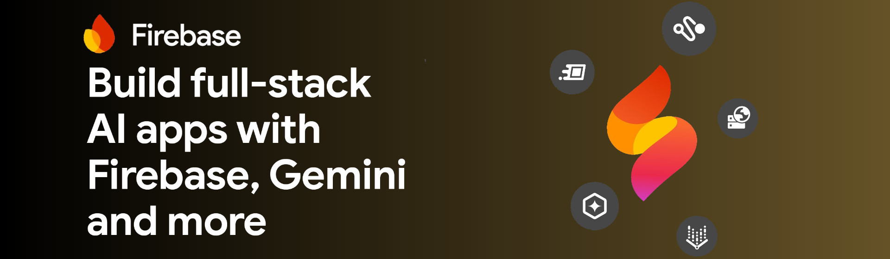
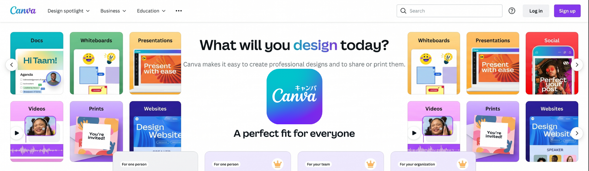

DIRGAHAYU
RI KE-81
TAP to start
Menu ☰


#81🇮🇩
Trial.muv
Iklan
Trial.G-Drive
Trial.ytmusik
Tabel
1. The Assembly
2. Behavioral Approach
3. Sebelum Esok
4. Dashboard
5. Survey Evaluasi (Dapatkan Voucher)
6. In Restroom
7. Interaksi (anonim)
Tutup
Judul Bab
Kembali ke Menu
Komentar Rakyat
Membalas UserID
✖
Kirim Suara
Pesan Terkirim!
Aspirasi Masuk (
)
Memuat pesan...
Kembali ke Menu


Komentar Rakyat
Aspirasi Masuk ()
Memuat pesan...